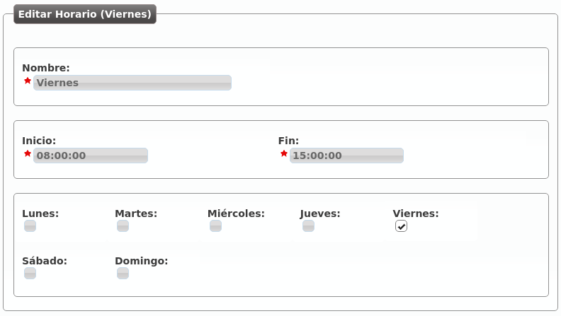

Filtros de entrada externo¶
Una de las configuraciones más habituales que todo administrador de empresa querrá realizar en un momento dado es poner filtros de horario y de calendario a sus DDIs externos.
Para ello, el primer paso es crear un horario.
Horarios¶
La sección Configuración de Empresa > Horarios permite definir los tramos horarios en los que un DDI externo está dentro de horario.
La interfaz que se le presenta al administrador de empresa cuando añade un horario es la siguiente:

Con la configuración anterior, hemos definido el tramo horario de mañana de una empresa de Lunes a Jueves.
Sigamos con el ejemplo y definamos el tramo horario de tarde de Lunes a Jueves:

Y el horario reducido de los viernes:
Ya tenemos los siguientes tramos horarios que, combinados, describen un horario de oficina tradicional:

Advertencia
Los horarios definen, una vez sumados, los tramos horarios activos: toda hora que no caiga dentro de uno de los tramos agrupados será considerada como llamada fuera de horario.
Calendarios¶
Los calendarios definen, una vez sumados, los días que se tienen que considerar festivos.
Imaginemos que creamos 3 calendarios tal que:

La creación de calendarios solo requiere dar un nombre al mismo, una vez creado hay que añadir días festivos a dicho calendario pulsando el botón de la derecha del lápiz:

Desde este momento, ese calendario tiene marcado el día 1 de Enero de 2016 como día festivo con locución de festivo especial llamada “Feliz año”.
Advertencia
Los calendarios tienen una lógica contraria a los horarios: si un día concreto no está definido como festivo en uno de los calendarios, será considerado como día laborable.
Consejo
Si un día es festivo en un calendario y no hay locución de festivo especial, se reproducirá la locución de festivo del filtro de entrada externo (ver más abajo).
Crear un filtro de entrada externo
Una vez que tenemos unos horarios y unos calendarios creados, llega el momento de agruparlos en lo que en IvozProvider se conoce por Filtro de entrada externos.
El interfaz que se le presenta al administrador de empresa es el siguiente:

- Nombre
Nombre con el que se referenciará este filtro.
- Locución de bienvenida
Esta locución se reproduce siempre que la llamada no se va a rechazar por festivo o fuera horario (es decir, en una hora normal de un día normal).
- Lista negra
Los origenes externos serán comprobados contra las Listas de coincidencia asociadas, si se encuentra una coincidencia, la llamada será directamente rechazada.
- Lista blanca
Los origenes externos serán comprobados contra las Listas de coincidencia asociadas, si se encuentra una coincidencia, la llamada será directamente enrutada al destino del DDI, ignorando el proceso del filtro. Tenga en cuenta que las listas negras son comprobadas antes que las listas blancas.
- Locución de festivo
Esta locución se reproducirá cuando el día de hoy esté marcado como festivo en uno de los calendarios y no se haya definido una locución de festivo especial en dicho calendario para ese día.
- Tipo de desvío festivo
Si una llamada entra un día festivo, aparte de la locución de festivo (si la hay), se puede realizar un desvío a un buzón de voz, a un número externo o a una extensión interna. En el ejemplo, la llamada se desviará los días festivos al móvil 676 676 676.
- Locución fuera horario
Esta locución se reproducirá cuando, siendo un día no festivo, la hora actual no esté dentro de ningunos de los horarios vinculados.
- Tipo de desvío fuera horario
Lo mismo que en festivo, pero para el caso de fuera horario. En la imagen, no se ejecutaría ningún desvío.
- Calendarios
Permite seleccionar múltiples calendarios, de forma que el calendario del filtro es la suma de todos ellos.
- Horarios
Permite seleccionar múltiples horarios, de forma que el horario del filtro es la suma de todos ellos.
Atención
El día festivo tiene prevalencia sobre el fuera horario. Primero se evalúan los calendarios, luego los horarios.
En la siguiente sección veremos como este filtro se asigna a los DDIs externos que queramos, definiendo así el comportamiento de los mismos fuera de horario y en días festivos, así como dentro de horario en el caso de setear locución de bienvenida en el filtro.